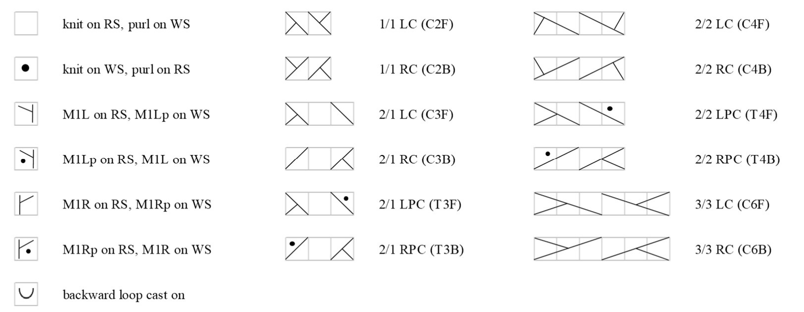

How this chart is put together
The five body cable patterns sit side by side in the order you knit them: read every round right to left, starting with ① and ending with ⑤ (same for front and back). Seed-stitch side panels are not shown.
Each pattern repeats on its own (① and ⑤ every 8 rows, ② and ④ every 20, ③ every 16), so the full combination only lines up again every 80 rounds. Each panel is tiled with its own repeat. A thick black line inside a panel marks where that pattern starts over at row 1.
Starting rows: the body continues the pattern from Chart B, which ends on row 32. Matching Chart B (XS) against the cable charts puts body round 1 at row 5 of ① and ⑤, row 17 of ② and ④, and row 9 of ③. These are the default “start row” values under each panel. Change them if your piece ended somewhere else.
Moving the highlighter: drag the yellow bar, click any row, or use ↑/Space for the next round and ↓ to go back. Your place is saved in this browser.
Chart key
In the round every round is a RS round: blank = knit, dot = purl.
